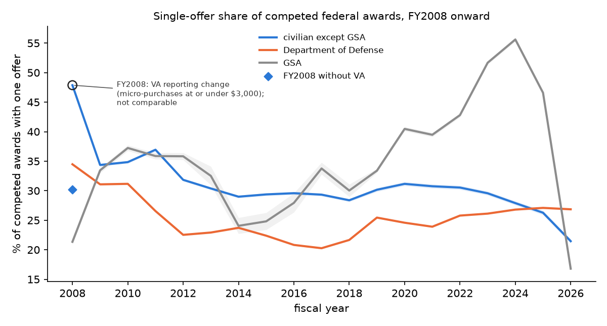
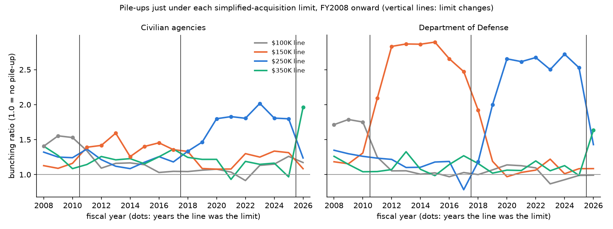
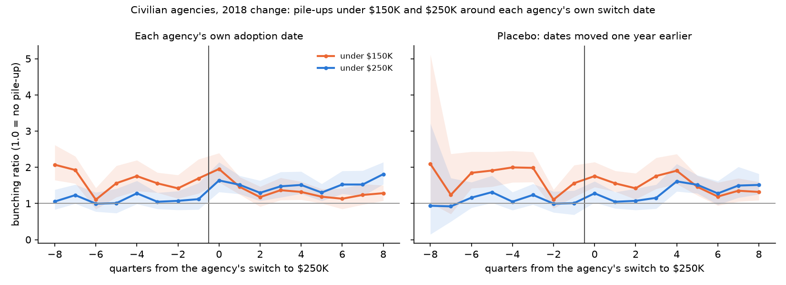
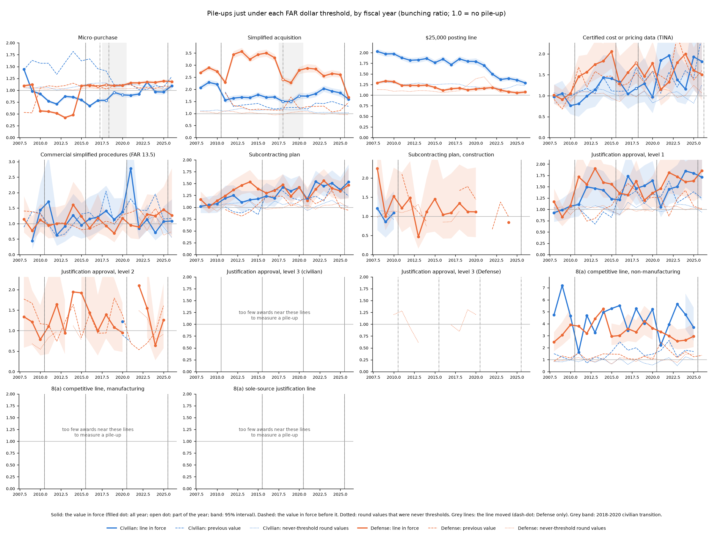
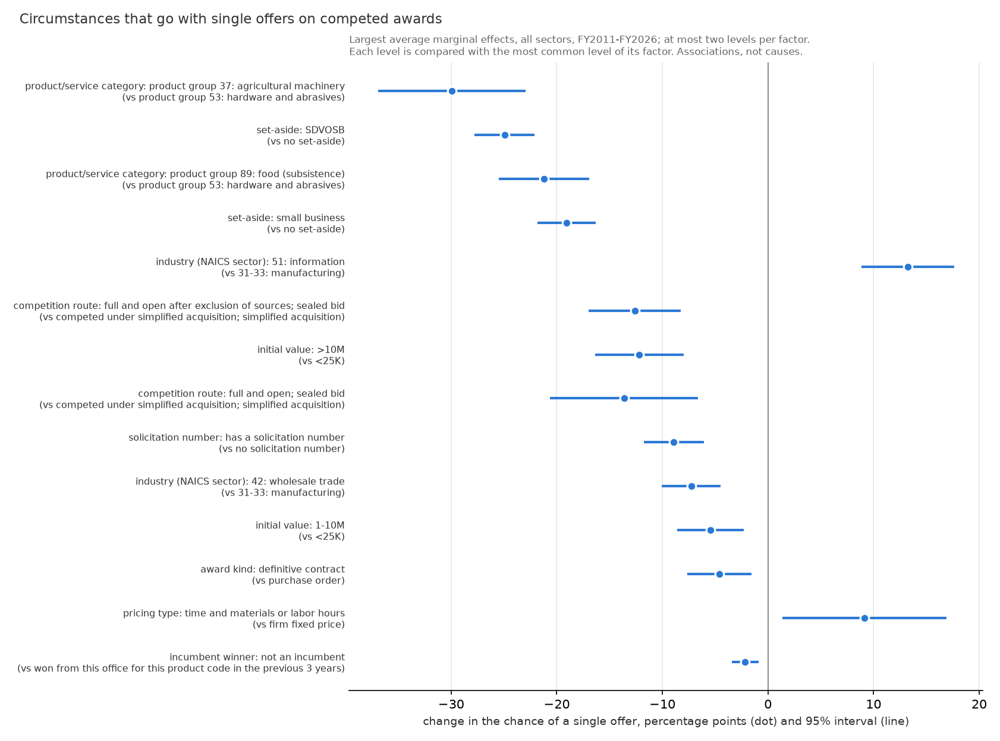
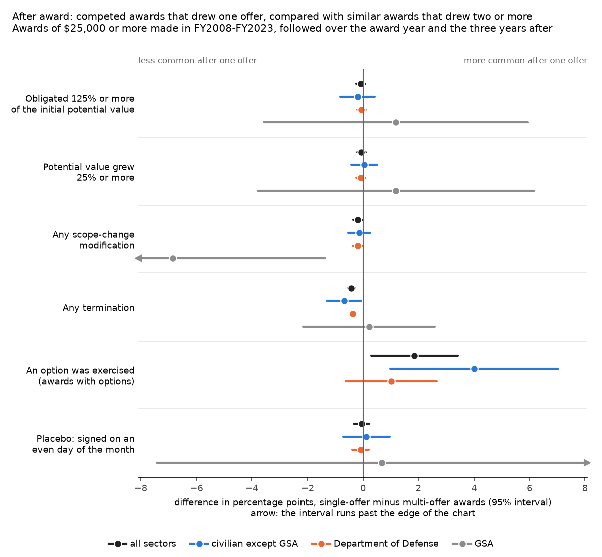
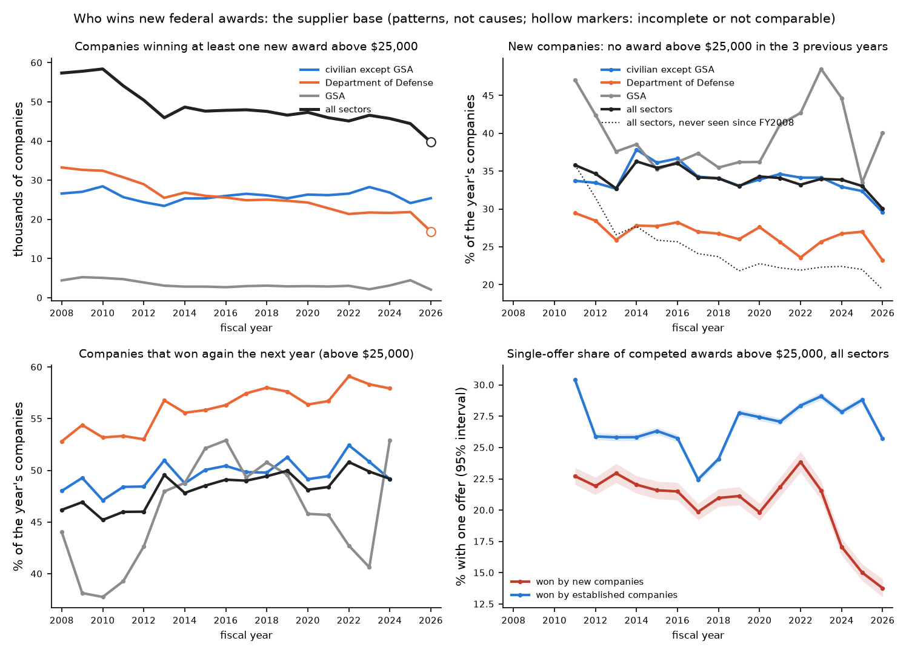

Federal Contract Competition: Findings & Forecasts
How often do competed federal contracts get only one bid, and do purchases bunch under dollar limits? The FY2024 to FY2026 sections cover civilian agencies only; the Department of Defense is not in them. The threshold test and the agency table cover every civilian agency. The in-depth single-bid analysis and the forecasts cover five departments: VA, HHS, DHS, Interior and USDA. The long-history sections, FY2008 onward, also cover the Department of Defense, whose data are published 90 days late.
By Ellie Burress · data through Sep 30, 2026 · explore the data · one-page brief · code and data · methodology
What's new: the long history, FY2008 onward, with Defense shown separately: Since 2008 · Pile-ups by year · Every dollar limit · Why only one bid? · After award · Split purchases? · Who wins · Data quality
Live: updated every morning
Fiscal year 2027 so far: awards dated Oct 1, 2026 to Nov 9, 2026, every civilian agency. With GSA's very small supply orders included, the share is 5.7% of 13,359 awards. USAspending's latest data load: Nov 10, 2026.
| Agency | Single-offer share so far | 95% interval | Competed awards so far |
|---|---|---|---|
| Justice (DOJ) | 35.4% | 31.9%–39.1% | 666 |
| Veterans Affairs (VA) | 30.2% | 26.2%–34.5% | 464 |
| Homeland Security (DHS) | 26.6% | 17.3%–38.5% | 64 |
| Transportation (DOT) | 20.6% | 12.5%–32.2% | 63 |
| Agriculture (USDA) | 12.2% | 7.0%–20.6% | 90 |
| State (DOS) | 12.1% | 7.1%–20.0% | 99 |
| Interior (DOI) | 11.8% | 6.4%–21.0% | 76 |
| National Aeronautics and Space Administration (NASA) | 6.8% | 3.2%–14.1% | 88 |
| General Services Administration (GSA) | 2.4% | 2.1%–2.7% | 11,651 |
Agencies with at least 50 competed awards so far. The newest weeks are always incomplete: agencies have three business days to report an award, data loads happen on business days, and corrections keep arriving for weeks. Early-year shares are based on few awards and move a lot; compare them with the full-year shares in the every civilian agency section.
Open solicitations today (SAM.gov, Nov 10, 2026)
| Civilian department | Open solicitations |
|---|---|
| Veterans Affairs | 249 |
| Agriculture | 126 |
| Homeland Security | 123 |
| Interior | 115 |
| Justice | 100 |
| Health and Human Services | 71 |
| State | 68 |
| Energy | 66 |
| General Services Administration | 45 |
| Transportation | 38 |
Distinct solicitation numbers with a response deadline on or after today, from SAM.gov's nightly list of active notices. Defense solicitations are public right away, even though Defense awards are published 90 days late.
1. When the threshold moved, the pile-up moved

On Oct 1, 2025, the simplified-acquisition threshold rose from $250K to $350K. Across all civilian agencies, the pile-up just under $250K fell from 1.79 to 1.24, and a new one formed under $350K (0.97 → 1.96). Comparison lines at $200K and $450K, where nothing changed, did not move.

Bunching ratio by fiscal quarter, with 95% intervals. Purchase orders and definitive contracts of all civilian agencies.
2. Five departments: about one in four competed awards got a single offer

| Department | Single-offer share | Competed awards | FY2024 → FY2025 → FY2026 |
|---|---|---|---|
| Health and Human Services (HHS) | 40.3% | 9,590 | 41.8% → 39.6% → 38.1% |
| Veterans Affairs (VA) | 35.3% | 27,017 | 37.4% → 36.8% → 30.1% |
| Homeland Security (DHS) | 26.6% | 15,159 | 31.0% → 27.8% → 20.3% |
| Interior (DOI) | 17.9% | 15,880 | 20.6% → 17.5% → 14.9% |
| Agriculture (USDA) | 6.6% | 30,026 | 9.8% → 6.7% → 4.1% |
Tap a column heading to sort. Competed awards with a usable offer count (purchase orders, definitive contracts and contract vehicles).
| Department | Award type | Single-offer share | Competed awards |
|---|---|---|---|
| DHS | Definitive contracts | 27.9% | 1,116 |
| DHS | Contract vehicles (IDVs) | 7.4% | 978 |
| DHS | Purchase orders | 27.9% | 13,065 |
| DOI | Definitive contracts | 12.3% | 1,959 |
| DOI | Contract vehicles (IDVs) | 9.2% | 801 |
| DOI | Purchase orders | 19.3% | 13,120 |
| HHS | Definitive contracts | 32.2% | 849 |
| HHS | Contract vehicles (IDVs) | 10.3% | 907 |
| HHS | Purchase orders | 44.7% | 7,834 |
| USDA | Definitive contracts | 3.1% | 8,838 |
| USDA | Contract vehicles (IDVs) | 0.8% | 13,539 |
| USDA | Purchase orders | 20.7% | 7,649 |
| VA | Definitive contracts | 18.7% | 3,278 |
| VA | Contract vehicles (IDVs) | 30.6% | 3,466 |
| VA | Purchase orders | 38.8% | 20,273 |
| Set-aside type | Single-offer share | Competed awards |
|---|---|---|
| no set-aside | 41.1% | 35,372 |
| other/blank | 37.2% | 1,472 |
| WOSB/EDWOSB | 21.7% | 244 |
| 8(a) | 20.3% | 172 |
| VOSB | 16.4% | 122 |
| other | 16.1% | 2,492 |
| SDVOSB | 14.8% | 10,117 |
| small business | 10.8% | 47,556 |
| HUBZone | 7.2% | 125 |
Awards open to everyone (no set-aside) drew a single offer far more often than small-business set-asides.
3. Every civilian agency
Across all 64 civilian agencies, 34.0% of 466,009 competed awards got a single offer. GSA accounts for 63% of those awards, mostly very small supply orders (median $143), so without GSA the share is 25.5% (170,687 awards). Outside GSA and the five departments above, it is 29.1% (73,015 awards).
| Agency | Single-offer share | 95% interval | Competed awards | FY2024 → FY2025 → FY2026 |
|---|---|---|---|---|
| U.S. Agency for Global Media (USAGM) | 74.4% | 69.0%–79.1% | 281 | 84.5% → 65.2% → 52.5% |
| District of Columbia Courts (DC COURTS) | 42.1% | 37.0%–47.4% | 342 | 35.9% → 36.0% → 52.8% |
| Health and Human Services (HHS) section 2 | 40.3% | 39.3%–41.3% | 9,590 | 41.8% → 39.6% → 38.1% |
| Justice (DOJ) | 39.1% | 38.5%–39.7% | 29,088 | 38.8% → 38.5% → 40.1% |
| General Services Administration (GSA) | 39.0% | 38.8%–39.2% | 295,322 | 55.6% → 46.6% → 16.8% |
| Education (ED) | 38.0% | 32.2%–44.2% | 250 | 59.6% → 19.3% → 5.3% |
| Veterans Affairs (VA) section 2 | 35.3% | 34.7%–35.9% | 27,017 | 37.4% → 36.8% → 30.1% |
| Environmental Protection Agency (EPA) | 30.7% | 27.8%–33.7% | 941 | 37.5% → 29.8% → 22.2% |
| Treasury (TREAS) | 28.5% | 26.8%–30.2% | 2,606 | 31.7% → 29.4% → 18.7% |
| Social Security Administration (SSA) | 28.4% | 22.9%–34.8% | 218 | 38.3% → 25.0% → 15.4% |
| Homeland Security (DHS) section 2 | 26.6% | 25.9%–27.3% | 15,159 | 31.0% → 27.8% → 20.3% |
| Transportation (DOT) | 24.1% | 23.0%–25.3% | 5,264 | 28.2% → 23.7% → 20.0% |
| Labor (DOL) | 24.0% | 18.8%–30.0% | 221 | 27.8% → 22.0% → 22.2% |
| Agency for International Development (USAID) | 21.9% | 19.8%–24.0% | 1,500 | 23.3% → 16.3% → 13.3% |
| State (DOS) | 21.1% | 20.6%–21.6% | 23,270 | 20.5% → 20.6% → 23.0% |
| Commerce (DOC) | 19.8% | 18.5%–21.2% | 3,396 | 25.1% → 19.4% → 14.5% |
| Interior (DOI) section 2 | 17.9% | 17.3%–18.5% | 15,880 | 20.6% → 17.5% → 14.9% |
| Energy (DOE) | 16.0% | 13.8%–18.5% | 920 | 17.1% → 15.8% → 14.7% |
| National Aeronautics and Space Administration (NASA) | 13.5% | 12.4%–14.8% | 3,130 | 16.0% → 10.9% → 13.7% |
| Agriculture (USDA) section 2 | 6.6% | 6.3%–6.9% | 30,026 | 9.8% → 6.7% → 4.1% |
Tap a column heading to sort. Agencies with at least 200 competed awards with a usable offer count; the other 44 smaller agencies together: 31.8% of 1,588 awards. Same definitions as section 2. GSA's own share fell from 56% in FY2024 to 17% in FY2026, almost entirely in its supply orders; that may reflect a change in how those automated orders are recorded rather than a change in competition. Data downloaded Nov 9, 2026, the same snapshot as every other result on this page.
4. Since 2008
Civilian agencies except GSA: FY2008 is not comparable with later years because of a reporting change (below). From FY2009, 34.4% of competed awards got only one offer, and 21.5% in FY2026. Years covered so far: FY2008 to FY2026.

| Sector | First year | Latest year | Change | Awards, latest year |
|---|---|---|---|---|
| Civilian agencies except GSA | FY2008: 47.9%* | FY2026: 21.5% | −26.4 points | 50,764 |
| GSA | FY2008: 21.3% | FY2026: 16.8% | −4.5 points | 104,408 |
| Defense | FY2008: 34.5% | FY2026: 26.9% | −7.6 points | 238,189 |
* Caution.
- Defense, FY2026: FY2026 is incomplete for the Department of Defense: few Defense awards dated after July 2026 are in these tables yet (Defense data are published about 90 days late). Not comparable with complete years.
- Civilian agencies except GSA, FY2008: FY2008 reporting change: Department of Veterans Affairs reported 31,299 competed micro-purchases with a usable offer count (at or under $3,000) in FY2008, against 686 in FY2009; 99% of them record one offer. Without Department of Veterans Affairs this sector's FY2008 share is 30.2%; for awards above $3,000 it is 32.2%. Not comparable with later years.
How to read this. Each line is the share of competed awards with a usable offer count that got exactly one offer, by fiscal year, with the same definitions as above. GSA is shown on its own because its many very small supply orders outnumber everything else and their offer coding changed. Defense data are published 90 days late, so the newest Defense year can be incomplete. A falling share can mean more bidders or a change in how offers are recorded; the chart cannot tell which (see data quality). Agency by agency: explorer.
5. Does the pile-up follow the limit?
In 5 of 6 tests (each change of the simplified-acquisition limit, civilian agencies and Defense separately), the pile-up under the new limit grew clearly and the one under the old limit shrank. Years covered so far: FY2008 to FY2026.

- $100K to $150K (October 1, 2010; FY2010 vs. FY2011). Civilian agencies: under $150K, 1.16 → 1.39; under $100K, 1.53 → 1.34 (no clear move with the limit). Defense: under $150K, 1.31 → 2.09; under $100K, 1.75 → 1.25 (followed the limit).
- $150K to $250K (2018, agency by agency; FY2017 vs. FY2020). Civilian agencies: under $250K, 1.18 → 1.80; under $150K, 1.36 → 1.08 (followed the limit). Defense: under $250K, 0.78 → 2.65; under $150K, 2.47 → 0.97 (followed the limit).
- $250K to $350K (October 1, 2025; FY2025 vs. FY2026). Civilian agencies: under $350K, 0.97 → 1.96; under $250K, 1.80 → 1.24 (followed the limit). Defense: under $350K, 0.99 → 1.64; under $250K, 2.53 → 1.43 (followed the limit).
The 2018 change, agency by agency. Civilian agencies raised the limit from $150K to $250K on different dates. Lined up on each agency's own date, the pile-up under $250K averaged 1.13 in the four quarters before and 1.48 in the four after; under $150K it went from 1.61 to 1.49. Placebo, with every date moved one year earlier: under $250K, 1.07 before and 1.14 after. The jump at the true dates (+0.35) is larger than at the placebo dates (+0.07).

How to read this. The bunching ratio counts the awards just under a line and divides by the number a smooth curve predicts there; 1.0 means no pile-up. Purchase orders and definitive contracts. "Grew clearly" means the 95% intervals of the two years do not overlap. A pile-up is a pattern, not proof of why it happens: budgets written to fit the rules and contracts split to stay under a line look the same here. Year by year: explorer.
6. Every dollar limit
104 changes of a dollar limit were checked, for civilian agencies and Defense separately. The pile-up moved with the line in 25, did not clearly move in 26, and moved the wrong way in 5. 48 cannot be tested yet (30 too few awards near the line; 18 before or after window outside FY2008 to FY2026). The largest move: 8(a) competitive line, non-manufacturing, civilian, $3.5M to $4M (Oct 1, 2010): difference in differences +7.21 (+4.30 to +11.50). Years covered so far: FY2008 to FY2026.

| Rule | Moved | No clear move | Moved the wrong way | Not testable yet |
|---|---|---|---|---|
| Micro-purchase | 3 | 0 | 4 | 2 |
| Simplified acquisition | 6 | 0 | 0 | 0 |
| Certified cost or pricing data | 2 | 6 | 0 | 3 |
| Commercial simplified procedures | 0 | 7 | 0 | 3 |
| Subcontracting plan | 5 | 2 | 1 | 2 |
| Subcontracting plan, construction | 0 | 2 | 0 | 2 |
| Justification approval, level 1 | 5 | 3 | 0 | 2 |
| Justification approval, level 2 | 0 | 6 | 0 | 4 |
| Justification approval, level 3 (civilian) | 0 | 0 | 0 | 5 |
| Justification approval, level 3 (Defense) | 0 | 0 | 0 | 5 |
| 8(a) competitive line, non-manufacturing | 4 | 0 | 0 | 4 |
| 8(a) competitive line, manufacturing | 0 | 0 | 0 | 10 |
| 8(a) sole-source justification | 0 | 0 | 0 | 6 |
How to read this. Each test compares the pile-up under the old and the new value in the two years before and the two years after a change (difference in differences; above zero means the pile-up moved with the line). Many limits changed on the same day, so one test can pick up another rule's move. Awards also heap at round numbers, which is why each line is compared with round values that were never limits. A pile-up does not show why it happens. Detail: explorer.
7. Why only one bid?
The clearest link: product group 37: agricultural machinery (product/service category) went with a 29.9 percentage points lower chance of a single offer than product group 53: hardware and abrasives. Years in the model so far: FY2011 to FY2026. Tested on data it was not fitted on (train FY2011-FY2024, test FY2025), the model's accuracy (AUC) is 0.81, where 0.5 is a coin flip.

| Factor | This kind of award | Compared with | Chance of one offer, points (95% interval) |
|---|---|---|---|
| product/service category | product group 37: agricultural machinery | product group 53: hardware and abrasives | −29.9 (−36.9 to −22.9) |
| set-aside | SDVOSB | no set-aside | −24.9 (−27.8 to −22.1) |
| industry (NAICS sector) | 51: information | 31-33: manufacturing | +13.2 (+8.8 to +17.6) |
| competition route | full and open after exclusion of sources; sealed bid | competed under simplified acquisition; simplified acquisition | −12.6 (−17.0 to −8.2) |
| initial value | >10M | <25K | −12.2 (−16.4 to −8.0) |
How to read this. These are associations, not causes. Each row compares one kind of award with the most common kind for the same factor, with the other factors, the agency and the year held fixed. Factors travel together and with things the data do not record, and agencies record offers differently (see data quality), so a factor can stand in for something else. The chart shows more factors than the table.
8. Do one-bid awards turn out worse?
Awards of $25K or more made in FY2008-FY2023, followed over the award year and the three years after: 5 of 10 outcomes differ clearly (the 95% interval excludes zero) between awards that drew one offer and similar awards that drew two or more. Clearest: Any termination, −0.4 points (−0.6 to −0.3). Placebo checks, which competition cannot affect, show no difference, as they should (award signed on an even day of the month: −0.1 points (−0.3 to +0.2); a coin flip tied to the award's ID number: +0.2 points (−0.1 to +0.5)).

| Outcome | Awards with two or more offers | One offer minus two or more (95% interval) |
|---|---|---|
| Dollars obligated over the follow-up, as a multiple of the initial potential value (0 to 3) | 0.95× | +0.023 (+0.014 to +0.031) |
| Obligated 125% or more of the initial potential value | 2.2% | −0.1 points (−0.2 to +0.1) |
| Largest single increase in potential value, as a multiple of the initial value (0 to 3) | 0.02× | −0.001 (−0.003 to +0.002) |
| One modification raised the potential value by 25% or more | 2.3% | −0.11 points (−0.26 to +0.05) |
| Growth of potential value over the follow-up (-1 to 3; needs value_sum) | -0.04× | +0.023 (+0.015 to +0.031) |
| Potential value grew 25% or more (needs value_sum) | 2.5% | −0.1 points (−0.2 to +0.1) |
| Any scope-change modification | 5.2% | −0.19 points (−0.35 to −0.04) |
| Number of scope-change modifications (0 to 10) | 0.09 | −0.0033 (−0.0071 to +0.0004) |
| Any termination | 1.2% | −0.4 points (−0.6 to −0.3) |
| An option was exercised (awards with options left at award) | 61.5% | +1.8 points (+0.3 to +3.4) |
How to read this. Each comparison is made inside groups of awards from the same buying office, quarter, award type, product and size, so only groups holding both kinds of award count (33% of awards). One-offer awards can still differ in ways the data do not record, and extra money or scope changes are often legitimate. Award data have no unit prices, so this cannot show whether one-offer awards cost more.
9. Split purchases?
At the real limits, clusters that look like split purchases were 1.05 to 1.39 times as common as fake limits predict (1.0 = no excess); leaving out awards just under the line, 1.02 to 1.07 times. Years covered so far: FY2008 to FY2026.
| Sector | Limit | Excess ratio, all awards (95% interval) | Without awards just under the line |
|---|---|---|---|
| Civilian except GSA | Simplified acquisition limit | 1.06 (1.05 to 1.07) | 1.03 (1.02 to 1.05) |
| Civilian except GSA | Micro-purchase limit | 1.24 (1.22 to 1.26) | 1.07 (1.06 to 1.10) |
| GSA | Simplified acquisition limit | 1.06 (1.01 to 1.17) | 1.07 (1.02 to 1.18) |
| GSA | Micro-purchase limit | 1.39 (1.24 to 1.58) | 1.05 (0.93 to 1.18) |
| Defense | Simplified acquisition limit | 1.11 (1.08 to 1.13) | 1.03 (1.01 to 1.05) |
| Defense | Micro-purchase limit | 1.05 (1.04 to 1.07) | 1.02 (1.01 to 1.04) |
How to read this. A cluster is two or more awards from the same company, buying office and product within 30 days, each at or under a limit but together above it. The excess ratio compares how often that happens at the real limit with fake limits where no rule applies. Repeat buying of supplies makes such clusters everywhere, and single awards bunched just under a limit add some too; the last column removes that. This is a screen about markets: it cannot tell a prohibited split from ordinary repeat buying.
10. Who wins: the supplier base
44,466 companies won at least one new award above $25,000 in FY2025, against 57,373 in FY2008 (22% fewer). In an average year (FY2011 to FY2025), 34% of them had won no such award in the three years before, and together they won 13% of the awards. About 48% won again the next year. Competed awards won by new companies drew a single offer 21.0% of the time, against 26.9% for established companies (FY2011 to FY2025 pooled).

The top 1% of companies won 65% of the initial dollars of purchase orders and definitive contracts above $25,000 in FY2025.
How to read this. A company is one registered identifier: parents and subsidiaries count separately. Only new prime awards are counted; orders under existing contract vehicles are not in these tables. Dollars are not adjusted for inflation. Company identifiers changed from DUNS to UEI in 2022; years that could not be checked across that switch are hollow on the chart and marked not comparable in the files. No company is named, and cells with fewer than 10 companies are left out. These are patterns, not proof of causes.
11. Data quality
The monitor flagged 85 agency quarters where recording or reporting shifted sharply: 30 in offer counts, 28 in the share marked competed, 27 in the number of awards. The largest are below, in two lists: shares move in percentage points and award counts in percent, so they are not ranked together. The same check over the long history (FY2008 to FY2026, Defense included) flags 681 agency quarters (results/quality_history_flags.csv).
Largest shifts in shares (percentage points)
| Agency | Award type | Quarter | What changed | Before → after | Change |
|---|---|---|---|---|---|
| General Services Administration | Definitive contracts | FY2025Q4 | share marked competed | 78.5% → 15.6% | −62.9 points |
| General Services Administration | Contract vehicles (IDVs) | FY2024Q4 | share with no usable offer count | 80.2% → 34.7% | −45.6 points |
| DOI | Purchase orders | FY2025Q3 | share marked competed | 71.3% → 31.1% | −40.2 points |
Largest changes in the number of awards (percent, against the same quarter a year earlier)
| Agency | Award type | Quarter | What changed | Before → after | Change |
|---|---|---|---|---|---|
| General Services Administration | Contract vehicles (IDVs) | FY2025Q1 | number of awards, vs. the same quarter a year earlier | 401 → 2,805 | +600% |
| USDA | Contract vehicles (IDVs) | FY2026Q4 | number of awards, vs. the same quarter a year earlier | 427 → 2,199 | +415% |
| General Services Administration | Contract vehicles (IDVs) | FY2025Q3 | number of awards, vs. the same quarter a year earlier | 573 → 1,282 | +124% |
How to read this. A flag does not say whether the cause is a coding change, late reporting or a real change. It says: check before trusting numbers for that agency and quarter. Shares are flagged when they move at least 10 points with a z-score of at least 6; award counts when they move 40% or more. Every flag: explorer.
12. Forecast scoreboard
| Forecast | What it predicts | Resolves | Result |
|---|---|---|---|
| PIO-F1 | Chance of a single offer for each of 150 open civilian solicitations | Jan 31, 2027, Feb 28, 2027, Mar 31, 2027 | Pending |
| PIO-F2 | FY2027 Q1 pile-up under $350K: 2.03 (80% range 1.40–2.66); under $250K: 1.23 (0.88–1.58) | Feb 28, 2027 | Pending see progress |
Both forecasts were sealed on Oct 24, 2026, before any outcome existed. Fingerprints (SHA-256): PIO-F1 a8d1bb3319bf2fc1439550ee99c971742408a99a4772db426b26dec15f0657d2 · PIO-F2 5a7009ba0f17e953bd1fea32d2b7fe9241a849b85222266506c5312e4790c43b. PIO-F2 is published in full; PIO-F1 will be posted unchanged when it is scored.
Daily forecasts. A daily series of sealed forecasts, one for each new open solicitation, is built and tested; the first batch has not been sealed yet (how it works).
13. Forecast progress (updated daily)
| PIO-F2 quantity | Forecast (80% range) | So far | 95% interval so far | So far vs. range |
|---|---|---|---|---|
| Pile-up under $350K | 2.03 (1.40–2.66) | 1.76 | 0.79–5.29 | inside |
| Pile-up under $250K | 1.23 (0.88–1.58) | 1.88 | 1.21–3.03 | outside |
| Share of $10K–$20K orders under $15K | 36.1% (32.0%–40.1%) | 33.2% | 29.7%–37.1% | inside |
Provisional reading from 23,896 civilian awards dated Oct 1, 2026 to Nov 8, 2026 (checked Nov 9, 2026). This is not the score: the quarter runs through Dec 31, agencies keep reporting for weeks after, and early readings swing widely, as the wide intervals show. The official score uses data pulled on or after Feb 28, 2027.